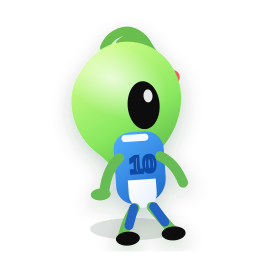
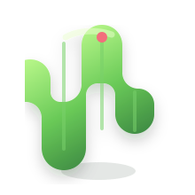
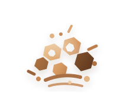
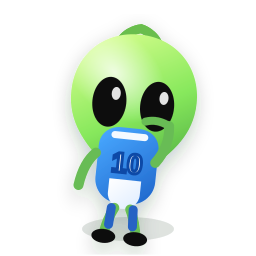

3
地形方案
这页用于横向比较森林、荒漠、废墟三种地形的 2.5D 关卡方案，重点让策划、美术、关卡设计直接看懂不同环境下的遮挡节奏与输出窗口差异。
每种地形都固定展示“未击中 / 击穿 / 弱点暴露”三个阶段，方便横向比较同阶段表现，也方便纵向判断单一地形的推进逻辑。
同一屏里保持一致的三阶段结构，让用户直接对比森林、荒漠、废墟在前景误导、中景掩体、后景露点上的玩法差异。
利用树冠、灌木和草丛切断轮廓，让玩家先识别，再确认目标窗口。
树体与灌木先打断识别，后方巡逻目标只露少量轮廓。



岩石与临时掩体被打出破口，扫描状态目标开始局部可见。


自然遮挡仍在，但后方弱点帧形成短时可打窗口。


轮廓相对清晰，前景干扰更少，适合验证掩体稀疏时的射击节奏。
仙人掌只做轻遮挡，完整墙体让目标主要依赖中景掩护。



破口形成得更直接，扫描帧在稀疏掩体后很快进入可读状态。


坍塌后遮挡快速收缩，输出窗口更短更直接。


多掩体、多破口、多层遮挡并存，适合做中后期遭遇点的复杂读图。
残墙和木箱形成复合遮挡，玩家需要从多段轮廓里识别目标。



破口与碎片同时工作，后方扫描目标通过多个小窗口被逐步揭露。

多破口叠加复杂掩体，弱点虽可见，但瞄准路径更考验判断。

三种地形都沿用同一套素材语义，但在轮廓切断、掩体密度和弱点窗口复杂度上各有侧重点。
森林更依赖柔性前景来削弱第一眼识别，适合把“看见了吗”放在先，把“能打吗”放在后。
荒漠的视线更直，墙体一旦被击穿，目标会更快进入有效射击窗口，节奏偏短促。
废墟适合把多个小破口串成复杂遭遇点，让玩家在有限可见区域里做更细的判断。
三个阶段保持统一命名，便于对照策划说明、视觉评审和关卡验证节点。
确认玩家第一眼是否会被前景和完整掩体误导，同时还能捕捉到后景目标的存在感。
验证击穿贴花与破口位置是否让目标局部露出，并形成明确的读图反馈。
判断弱点露出的面积、时机和掩体关系是否足够清晰，能否支撑有效输出。
建议把同一套资产优先按下面三类场景投放，以降低评审时的理解偏差。
先练轮廓观察，再引入击穿和弱点窗口，节奏更利于新手建立读图习惯。
掩体更直接，击穿反馈更快，适合测试命中感与窗口判断是否顺畅。
多层掩体与多破口组合更能承载连续决策，适合拉开中后期玩法深度。